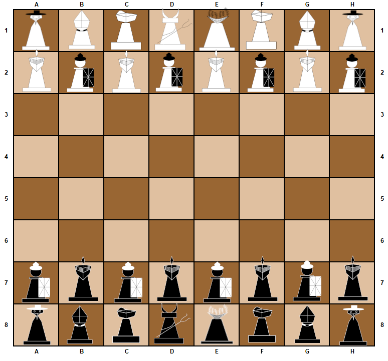
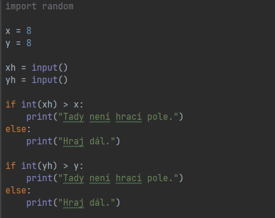

Náš program je inspirován klasickým šachem, který zna bezpochybně každý, a doplňuje jej o unikátní figurky, které mají jak jedinečné způsoby tažení tak i unikátní schopnosti, které dělají šach méně repetitivním a více záživným. Každá figurka má svůj vlastní příběh, který hráče informuje o motivu její přítomnosti v našem šachu.
Technické funkce
Jak již bylo řečeno v úvodu do programu, chceme v našem šachu používat vlastní figurky. Kromě toho také doufáme, že naprosto každá figurka by měla unikátní ability, které by fungovaly podobně jako QWER ability v League of Legends.


Hrací pole
Naše šachy používají typické hrací pole, které nabízí 64 možných pozic pro figurku. Hrací pole je jasně definováno neznámými x a y. Jakmile hráč zadá souřadnice (xh; yh), které by měly vyšší hondotu než stanovené hranice, nebude mu dovoleno se na toto místo přesunout. Toto je zajištěno pomocí jednoduché funkce if.
Tažení figurek v hracím poli.
Základní tažení figurky v hracím poli je popsáno následujícím vývojovým diagramem. Hrací pole bylo definováno jako rovina, ve které se figurky pohybují na základně souřadnic.
Princip získání figurky
Určení toho, zdali hráč získá figurku je založeno na principu stejných souřadnic. Hráč, který dostane oznámení, že dané souřadnice jsou již obsazeny, získá figurku, protože je potom jasné, že na dané souřadnice přišel později než protihráč.
Při začátku tvorby našeho šachu jsme dospěli k tomu, že kdybychom dělali obyčejné šachy s figurkami, které zná již každý, byla by naše hra vcelku nudná. Tudíž jsme se rozhodli udělat vlastní figurky, které mají vlastní způsoby tažení, které se ale bohužel kvůli omezenosti hracího pole moc neliší od těch obyčejných. Některé figurky mají také unikátní schopnosti, jako je např. možnost nakazit figurku protihráče či ji zmrazit. Vzhled figurek byl vytvořen v obyčejném malování, jelikož grafické programy, ve kterých se dá pracovat s křivkami, jako je např. Corel, jsou zpoplatněné. Přesunutí figurek na transparentní pozadí bylo následně zhotoveno v programu GIMP.
Přehled figurek
Legionář
Legionář byl součástí starověké římské pěchoty, který bojoval po boku římské císaře Julie Caesara. Byl také odpovědný za několik válečných zločinů za dob expanze Římského císařství, avšak se postupem času nakonec promlčelo a legionář nebyl za své činy souzen. Díky jeho zásluhám v období expanze onoho císařství se tento legionář dostal až na pozici vůdce celé legionářské armády Římského impéria. Těsně před rozdělením Říma na západní a východní část byl legionář se svojí armádou vyslán Romulem Augustem na misi do Alp, aby zabránil postupu barbarských vojsk do císařství. Cestou do bitvy byl ale opuštěn svým vojskem, načež zůstal sám proti celému vojsku barbarů, které ale nakonec porazil. Po svém triumfálním vítězství se dozvěděl, že jej zradil římský císař, protože se obával jeho vysokého postavení, které by mohlo vést k pokusu o převrat. Legionář tak zůstal naprosto sám a dodnes putuje za účelem dostat se do Říma a pomstít se císaři.
Morový doktor
Morový doktor za dob epidemie moru ve Velké Británii v Londýně po celou dobu své služby usiloval o to zbavit své rodné město všech infikovaných a ochránit tak své druhy v ohrožení, avšak téměř vždy se setkal s nepochopením a odsouzením, které si nedokázal vysvětlit. Obyvatelé Londýna na něj i jeho kolegy hleděli jako na posly smrti a zkázy, kteří jsou pravými nositeli moru. Nepochopení tohoto doktora se s rostoucí nenávistí obyvatel vůči jeho profesi začalo měnit na opětovanou nenávist a touhu po pomstě, kterou chtěl do města přivést v podobě toho, proti čemu se snažil během své služby bojovat – moru. Při vhodné příležitost se tedy zmocnil jedné z obětí tohoto moru, od které se nechal úmyslně nakazit. Ke všemu údivu o provedení tohoto činu přesvědčil i své kolegy, kteří poté neváhali o úmyslném nakažení za účelem zkázy. Zanedlouho se morem úmyslně nakazili všichni moroví doktoři v Londýně a začali úmyslně infikovat každého obyvatele Londýna, kterého potkali. Ironicky se tito doktoři nakonec stali přesně tím, jak je popisovali obyvatelé Londýna.
Arcibiskup
Zkažen svojí mocí, arcibiskup měl nejvyšší pozici v katolické církvi ve Francii. Své moci zneužil takovým způsobem, že ve Francii zavedl jako jedinou uznávanou víru křesťanství, přičemž protestantské varianty této víry byly také potlačeny a zakázány. Arcibiskupovi se několik let dařilo omezovat svobodu víry všech občanů, avšak netušil, že tito občané proti němu tajně plánovali povstání, ke kterému zanedlouho nakonec došlo. Arcibiskupovi se naneštěstí povedlo utéct a jedinou náplní jeho dosavadního putování je nalezení místa, které si bude moci opět podmanit. Inspirací pro vzhled této figurky byl Papa Emeritus ze švédské kapely Ghost.
Tažení arcibiskupa
Tažení této figurky lze vidět v následujícím schématu, které je také popsáno kódem ve Visual Studio Code.
Kardinál
Kardinál kázal ve významné italské rotundě za dob Svaté říše římské. Jeho kázání byla ale většinou velice osobitá a nestyděl se v nich sympatizovat s některými ideály okultismu a s kazateli, kteří byli katolickou církví označeni jako kacíři. Kardinála a jeho zkažené názory by normálně katolická církev ignorovala, avšak k jejich údivu začal kardinál nabírat na popularitě a na jeho kázání se brzy začaly scházet celé obce, a proto začala katolická církev jednat. Tak započala inkvizice, která měla za úkol zbavit se kardinála. Kardinál měl tedy své jednání vysvětlit papeži v Římě. Papeže se mu ale nepodařilo přesvědčit a byl označen za kacíře a odsouzen k upálení. Během jeho upalování se ale pod kardinálem otevřela zem a kardinál spadl do hlubin podzemí, přičemž později se dozvěděl, že kardinála zachránil před smrtí Hádes. Kardinál se tak bohovi podsvětí odvděčil takovým způsobem, že začal působit jako jeho osobní ochránce. Inspirací pro vzhled této figurky byl Kardinál Copia ze švédské kapely Ghost.
Tažení kardinála
Tažení této figurky popisuje následující schéma, které bylo také přepsáno do kódu ve Visual Studio Code
Hádes
Hádes byl nejstarším synem Rheie a Kronose a především bohem podsvětí. Moc nad podsvětím získal, když probíhala dělba moci mezi ním a jeho dvěma bratry – Poseidonem a Zeusem. Hádovi připadlo právě podsvětí, kterého se ochotně ujal a začal tam trávit většinu času, čímž si proti sobě poštval ostatní bohy. I přes nenávist bohů se ale v božích a nebeských záležitostech neangažoval, protože věděl, že každý, kdo se někdy narodil, by nakonec musel přijít do Hádova domů, jímž byla říše mrtvých. Později nad touto říší vládl se svou manželkou Peresfonu, se kterou společně plánuje napadnout dvě zbylé říše a udělat tak z celého světa říši mrtvých. Unikátní schopností této figurky je seslání trojhlavého psa Cerbera, jenž střeží vchod do podsvětí. Provedení této ability je popsáno v následujícím vývojovém diagramu.
Persefona
Persefona byla spoluvládkyně podsvětí a manželka Hádese. Moc nad touto říší ale nesla proti své vůli, jelikož byla unesena Hádem, který ji na tuto pozici postavil. Zvenku se ale rozhodla potichu trpět v této říši mrtvých a přijmout svůj osud. Celou dobu se ale tajně snažila přijít na způsob, jak oživit všechny mrtvé a pokusit se o vyhnání Hádese z jeho domova. Pokud by se ji toto povedlo, plánovala se dohodnout se Zeusem a Poseidonem a rozdělit říší mrtvých mezi ně. Doteď ale stále čeká na příležitost, kdy by mohla Hádese svrhnout či po něm převzít moc.
Válečník
Benefity pro přihlášené uživatele
Jakmile bude uživatel přihlášený, budou se ukládat jeho výhry, tudíž se bude moci umístit v tabulce nejlepších hráčů. U hráče, jenž bude hrát bez přihlášení, se nebude ukládat počet výher, tudíž pro něj nebude možné se umístit v tabulce.
Škrtnuté návrhy
Ktulu
Ktulu měla být jednou z figurek, jejíž schopnost byla schovat se do hracího pole a poté vzít jednu z blízkých figurek protihráče do "hlubin hracího pole". Tato schopnost nakonec ale vzešla jako zbytečná, jelikož protihráč si mohl zapamatovat, kam se Ktulu schovala a mohl by se tomuto místo jedndouše vyhýbat, nebo do něj poslat návnadu, čímž by Ktulu vyčerpala svůj limit pro tuto schonpost. Zároveň se Ktulu již jednoduše nevešla do řady figurek hráče, tudíž byla škrtnuta.
Pegas
Pegas měl být také jednou z figurek, avšak pro něj nebyl ani zhotoven vzhled a v průběhu vývoje se na něj prakticky zapomnělo. Také moc přípominal figurku koně z klasického šachu, tudíž by porušoval zásadu vlastních figurek.